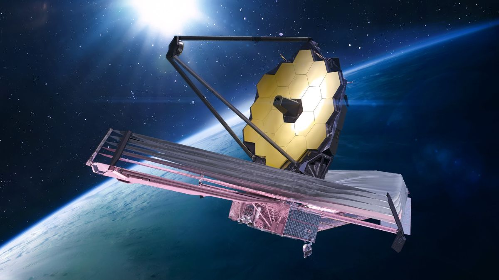

SatTrack
JWST
ISS
STARLINK-5196
NOAA-19
AQUA
KMS-4
SUOMI-NPP
METOP-B
CSS
TERRA
USA-338
USA-276
TK-1
METEOR-M2
NAVSTAR-81
LANDSAT-9
SWOT
SENTINEL-6
ICON
PRISMA
Longitude
-4.899
Latitude
134.234
Speed
134.234
Get more info
James Webb Space Telescope

Launched :
Feburary 2nd, 2008
Type :
Astronomy
This is some text about the jwst. it takes cool photos and shit
Close